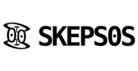
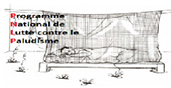

EduPalu est une application d'information et d'éducation sur le paludisme au Congo.
Coordination scientifique et technique : Fondation Congolaise pour la Recherche Médicale (FCRM).
Développement : FCRM et Fongwama, la plateforme congolaise de développement libre.
Ce projet est soutenu par nos partenaires :



Cette application est un logiciel libre diffusé sous la licence :
The GNU General Public License (GPL)
Version 2, June 1991
Copyright (C) 1989, 1991 Free Software Foundation, Inc.
59 Temple Place, Suite 330, Boston, MA 02111-1307 USA
Everyone is permitted to copy and distribute verbatim copies of this license document, but changing it is not allowed.